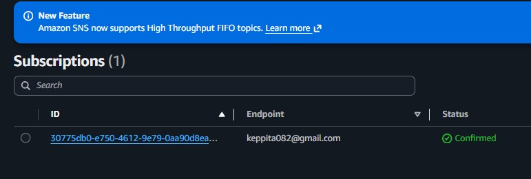
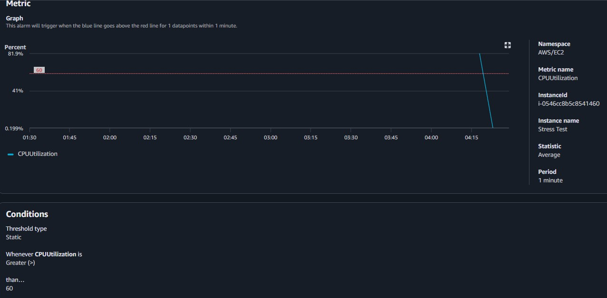
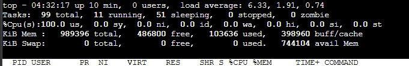
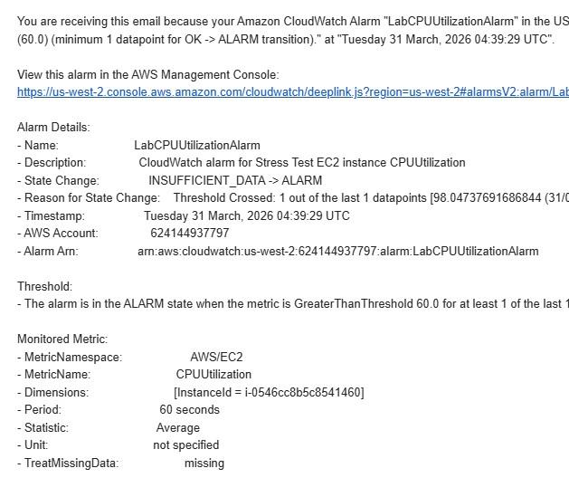
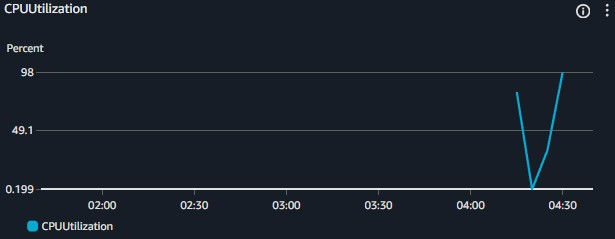

Automated Workflows
Created robust Notification Topics within SNS and bound Email endpoints as subscribers. Configured CloudWatch to actively monitor EC2 and evaluate performance against a 60% CPU utilization ceiling cap over 1-minute intervals.
This lab contrasts the disciplines of logging and monitoring to achieve a unified security and performance baseline. Establish automated metrics tracking utilizing CloudWatch, hook alerts into Amazon SNS, and synthetically stress test EC2 instances to emulate adversarial CPU hijacking (e.g., Crypto-miners).
Established an architecture utilizing Amazon SNS to deliver administrative alerts natively triggered by an integrated Amazon CloudWatch Metric Alarm when EC2 utilization patterns breach predefined bounds.
Created robust Notification Topics within SNS and bound Email endpoints as subscribers. Configured CloudWatch to actively monitor EC2 and evaluate performance against a 60% CPU utilization ceiling cap over 1-minute intervals.
Validated the infrastructure by artificially stressing the instance utilizing the Linux stress utility, successfully pushing the system into an In Alarm state and firing the notification to immediately alert DevOps.
Detailed documentation spanning the integration of SNS Notification Topics to CloudWatch Dashboard mapping.
MyCwAlarm.
CPUUtilization filter targeting the Stress Test machine.MyCwAlarm SNS topic.
sudo stress --cpu 10 -v --timeout 400s causing CPU utilization to rapidly spike toward 100%.top command viewing live CPU process metrics.

CPUUtilization.
Quick reference of alternative utilities leveraged internally interacting with system limits via CLI.
stressA tool that imposes a configurable amount of CPU, memory, I/O, or disk stress on a POSIX-compliant operating system.
stress --cpu <N> --timeout <S>s : Spawns N workers spinning on sqrt() for S seconds.topDisplays processor activity of Linux boxes actively providing an ongoing look at processor usage in real-time.
Relying simply on static security rulesets is inefficient for modern architectures. Threat actors finding entry points will routinely deploy resource intensive, often obfuscated toolkits. Coupling alerting capabilities to threshold-based anomalies allows Administrators to rapidly discern and terminate breaches otherwise quietly draining AWS credits.